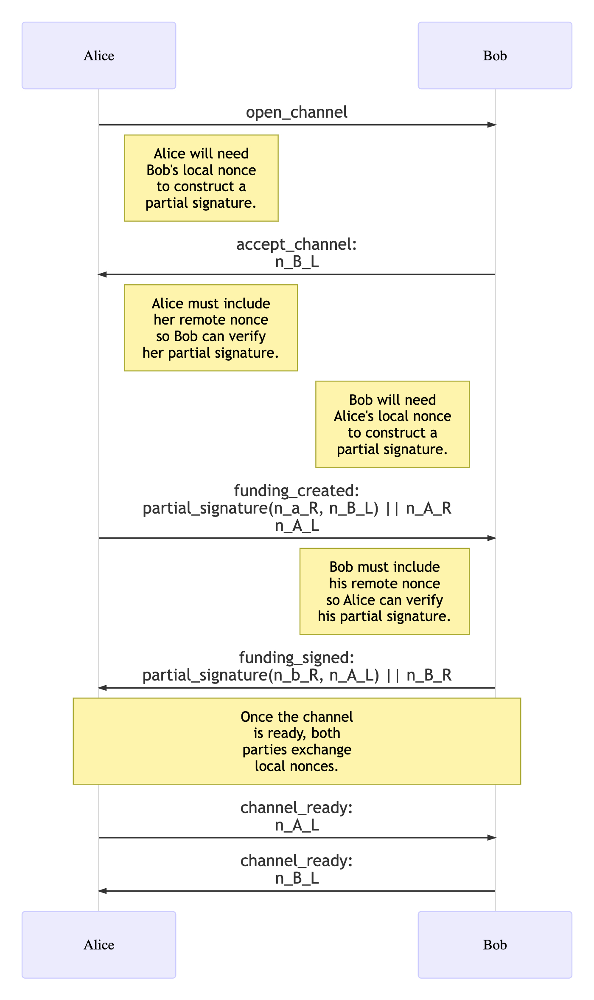
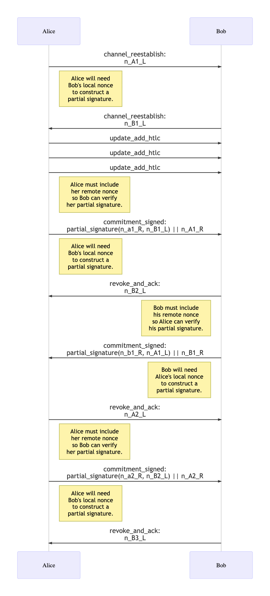

Extension BOLT XX: Simple Taproot Channels
Authors: * Olaoluwa Osuntokun roasbeef@lightning.engineering * Eugene Siegel eugene@lightning.engineering
Created: 2022-04-20
Table of Contents
- Introduction
- Appendix
- Footnotes
- Test Vectors
- Acknowledgements
Introduction
Abstract
The activation of the Taproot soft-fork suite enables a number
of updates to the Lightning Network, allowing developers to
improve the privacy, security, and flexibility of the system. This
document specifies extensions to BOLTs 2, 3, and 5 which describe
new, Taproot based channels to update to the Lightning Network to
take advantage of some of these new capabilities. Namely,
we mechanically translate the current funding and commitment
design to utilize musig2 and the new tapscript tree
capabilities.
Motivation
The activation of Taproot grants protocol developers with a number of new tools including: schnorr, musig2, scriptless scripts, PTLCs, merkalized script trees and more. While it’s technically possible to craft a single update to the Lightning Network to take advantage of all these new capabilities, we instead propose a step-wise update process, with each step layering on top of the prior with new capabilities. While the ultimate realization of a more advanced protocol may be delayed as a result of this approach, packing up smaller incremental updates will be easier to implement and review, and may also hasten the timeline to deploy initial taproot based channels.
In this document, we start by revising the most fundamental
component of a Lightning Channel: the funding output. By first
porting the funding output to Segwit V1 (P2TR) musig2
based output, we’re able to re-anchor all channels in the network
with the help of dynamic commitments. Once those channels are
re-anchored, dynamic commitments allows developers to ship
incremental changes to the commitment transaction, HTLC structure,
and overall channel structure – all without additional on-chain
transactions.
By restricting the surface area of the initial update, we aim to expedite the initial roll-out while also providing a solid base for future updates without blocking off any interesting design paths. Implementing and shipping a constrained update also gives implementers an opportunity to get more familiar with the new tooling and capabilities, before tackling more advanced protocol designs.
Preliminaries
In this section we lay out some preliminary concepts, protocol flows, and notation that’ll be used later in the core channel specification.
Pay-To-Taproot-Outputs
The Taproot soft fork package (BIPs 340, 341, and 342) introduced a new Segwit witness version: v1. This new witness version utilizes a new standardized public key script template:
OP_1 <taproot_output_key>The taproot_output_key is a 32-byte x-only
secp256k1 public key, with all digital signatures
based off of the schnorr signature scheme described in BIP
340.
A taproot_output_key commits to an internal key,
and optional script root via the following mapping:
taproot_output_key = taproot_internal_key + tagged_hash("TapTweak", taproot_internal_key || script_root)*GIt’s important to note that while
taproot_output_key is serialized as a 32-byte public
key, in order to properly spend the script path, the parity (even
or odd) of the output public key must be remembered.
The taproot_internal_key is also a BIP 340 public
key, ideally derived anew for each output. The
tagged_hash scheme is described in BIP 340, we
briefly define the function as:
tagged_hash(tag, msg) = SHA256(SHA256(tag) || SHA256(tag) || msg)Tapscript Tree Semantics
The script_root is the root of a Tapscript tree as
defined in BIP 341. A tree is composed of tap_leaves
and tap_branches.
A tap_leaf is a two tuple of
(leaf_version, leaf_script). A
tap_leaf is serialized as:
leaf_version || compact_size_of(leaf_script) || leaf_scriptwhere compact_size_of is the variable length
integer used in the Bitcoin P2P protocol.
The digest of a tap_leaf is computed as:
tagged_hash("TapLeaf", leaf_encoding)where leaf_encoding is serialized as:
leaf_version || compact_size_of(leaf_script) || leaf_scriptA tap_branch can commit to either a
tap_leaf or tap_branch. Before hashing,
a tap_branch sorts the two tap_node
arguments based on lexicographical ordering:
tagged_hash("TapBranch", sort(node_1, node_2))A tapscript tree is constructed by hashing each pair of leaves
into a tap_branch, then combining these branches with
each other until only a single hash remains. There’re no strict
requirements at the consensus level for tree construction,
allowing systems to “weight” the tree by placing items that occur
more often at the top of the tree. A simple algorithm that
attempts to produce
a balanced script tree can be found here.
BIP 86
A taproot_output_key doesn’t necessarily
need to commit to a script_root, unless the
script_root is being revealed, a normal key (skipping
the tweaking operation) can be used. In many cases it’s also nice
to prove to a 3rd party that the output can only be spent with a
top-level signature and not also a script path.
BIP 86 defines a taproot output key derivation scheme, wherein only the internal key is committed to without a script root:
taproot_output_key = taproot_internal_key + tagged_hash("TapTweak", taproot_internal_key)*GWe use BIP 86 whenever we want to ensure that a script path spend isn’t possible, and an output can only be spent via a key path.
We recommend that in any instances where a normal unencumbered output is used (cooperative closures, etc) BIP 86 is used as well.
Taproot Key Path Spends
A taproot key path spend a transaction to spend a taproot output without revealing the script root, which may or may not exist.
The witness of a keypath spend is simply a 64 or 65 byte
schnorr signature. A signature is 64 bytes if the new
SIGHASH_DEFAULT alias for SIGHASH_ALL is
being used. Otherwise a single byte for the sighash type is used
as normal:
<key_path_sig>If an output commits to a script root (or uses BIP 86), a private key will need to be tweaked in order to generate a valid signature, and negated if the resulting output key has an odd y coordinate (see BIP 341 for details).
For any revocation path based on a key spend (the HTLC revocation paths), the tap tweak value MUST be known in order to spend the out unilaterally. As a result, it’s recommend that for a given revoked state, the tap tweak value is also stored.
Taproot Script Path Spends
A script path spend is executed when a tapscript leaf is revealed. A script path spends has three components: a control block, the script leaf being revealed, and the valid witness.
A control block has the following serialization:
(output_key_y_parity | leaf_version) || internal_key || inclusion_proofThe first segment uses a spare bit of the
leaf_version to encode the parity of the output key,
which is checked during control block verification. The
internal_key is just that. The
inclusion_proof is the series of sibling hashes in
the path from the revealed leaf all the way up to the root of the
tree. In practice, if one hashes the revealed leaf, and each
32-byte hash of the inclusion proof together, they’ll reach the
script root if the proof was valid.
If only a single leaf is committed to in a tree, then the
inclusion_proof will be absent.
The final witness stack to spend a script path output is:
<witness1> ... <witnessN> <leaf_script> <control_block>Note that whenever a script path spend is required, in order to ensure an output is unilaterally spendable by a party, the finalized control block MUST either be stored as is, or the components needed to reconstruct the control block are persisted.
SIGHASH_ALL vs SIGHASH_DEFAULT
Where ever applicable, signers SHOULD use the
SIGHASH_DEFAULT sighash over
SIGHASH_ALL. When using taproot semantics, both
algorithm refer to the very same digest, but
SIGHASH_DEFAULT allows us to save a byte for any
signature, as omitting the explicit sighash byte denotes that the
default signing algorithm was used.
MuSig2 & Associated Changes
Musig2 is a multi-signature scheme based on schnorr signatures. It allows N parties to construct an aggregated public key, and then generate a single multi-signature that can only be generated with all the parties of the aggregated key. In practice, we use this to allow the funding output of channel to look just like any other P2TR output.
A musig2 signing flow has 4 stages:
First, each party generates a public nonce, and exchanges it with every other party.
Next, public keys are exchanged by each party, and combined into a single aggregated public key.
Next, each party generates a partial signature and exchanges it with every other party.
Finally, once all partial signatures are known, they can be combined into a valid schnorr Signature, which can be verified using BIP 340.
Steps 1&2 may be performed out of order, or concurrently. In our case only two parties exist, so as soon as one party knows both partial signatures, they can be combined into a final signature.
Thought this document musig2 refers to the
finalized (v1.0.0)
[BIP-0327](https://github.com/bitcoin/bips/blob/master/bip-0327.mediawiki
specification.
Key Aggregation
We refer to the algorithm of KeyAgg algorithm bip-musig2
v1.0.0 for key aggregation. In order to avoid sending extra
ordering information, we always assume that both keys are sorted
first with the KeySort algorithm before aggregating
(KeyAgg(KeySort(p1, p2))).
Nonce Generation
A musig2 secret nonce is the concatenation of two
random, 32-byte integers.
A musig2 public nonce is technically the
concatenation of two public keys, each representing the EC-point
corresponding to its secret integer, thus resulting in a 66-byte
value:
point_1 || point_2For nonce generation, we refer to the NonceGen
algorithm defined in the musig2 BIP. We only specify
the set of required arguments, though a signer can also opt to
specify the additional argument, in order to strengthen their
nonce.
Counter Based Nonce Generation & JIT Nonce Strengthening
Each new commitment state requires fresh nonces from both
parties, as each commitment state is signed using a fresh musig2
session. Nonces sent by either party in the
commitment_signed message can be generated
Just-In-Time (JIT), thus requiring no additional state. These
nonces can also be further strengthened by mixing in the
commitment sighash information into the nonce generation
algorithm.
Upon channel creation, and subsequent re-establishment, a fresh set of verification nonces are exchanged by each party. This is the nonce the party will use to verify a new incoming commitment state sent by the remote party. In order to force close a channel, the holder of a verification nonce must use that same nonce to counter sign the commitment transaction with the other half of the musig2 partial signature. Rather than force an implementation to retain additional signing state (the verification nonce) to avoid holding a “hot” (fully broadcast able) commitment on disk, we instead recommend a counter based approach.
In this scenario are nonce generated via a counter is deemed to be safe as:
Each commitment state only has a single signature exchanged to counter sign the commitment transaction.
Each commitment state has a unique number which is currently encoded as a 48-bit integer across the sequence and lock time of the commitment transaction.
The shachain scheme is used today to generate a fresh nonce-like value for the revocation scheme of today’s penalty based channels.
A verification nonce is only used to sign a local party’s commitment transaction when they go to broadcast a force close transaction.
The remote party never sees the unaggregated partial signature the local party will use to broadcast, only the aggregated signature is seen on chain.
As a result of all the above, a verification nonce will never be used to sign the exact same commitment transaction, thereby avoiding nonce reuse.
As a result, we recommend the following counter based scheme to generate verification nonce. With this scheme, signing can remain stateless, as given the commitment height/number of the state to sign, and the original shachain root, the verification nonce sent by that state can be deterministically reproduced:
Given the shachain root used to generate revocation pre-images,
shachain_root, derive thesha256hash of this value as:shachain_root_hash = sha256(shachain_root).Derive a new shachain root to be used to generate
musig2secret nonces via aHMACinvocation as:musig2_shachain_root = hmac(msg, shachain_root_hash), wheremsgis any string that can serve to uniquely bind the produced secret to this dedicated context. A recommended value is the ASCII stringtaproot-rev-rootconcatenated with thefunding_txid(which allows deriving distinct deterministic shachains when splicing).Given a commitment height/number (
N), the verification nonce to send to the remote party party can be derived by obtaining theNthshachain leaf preimagek_i. The verification nonce to be derived by calling themusig2.NonceGenalgorithm with the required values, and therand'value set tok_i.
Nonce Handling
For commitment transactions, Due to the asymmetric state of the current revocation channels, two sets of public nonces need to be exchanged by each party: one for the local commitment, and one for the remote commitment.
The nonce for the local commitment MUST be sent a priori, thus enabling the counterparty to create a valid partial signature.
The nonce for the remote commitment could be sent a priori, too, but for the purposes of simplicity and disambiguation, MUST be sent alongside the partial signature. To that end, we will create a new data type that will be reused in multiple TLV extensions described further down in this document.
The exception to this is the co-op close flow: as there’s only a single message to sign, we only require a single pair of nonces. These nonces can also be sent right as the co-op flow begins.
Note that if nonces for commitment updates are not generated using the counter based scheme described above, then the nonces MUST be persisted to disk. As a result, in order to minimize additional signing state, it is recommended that the shachain counter nonce scheme is used.
Nonce Terminology
At all times, there exist two nonces associated with a given commitment state: the signing nonce, and the verification nonce.
A peer’s signing nonce is used to generate new commitments for the remote party. Each time a party signs a commitment, they send another signing nonce to the remote party.
A peer’s verification nonce is used to verify incoming commitments sent by the remote party. Once a peer verifies and revoke a new commitment, another verification nonce is sent to the remote party.
Both sides will maintain a musig2 sessions for
their local commitment and the commitment of the remote party. A
peer’s local commitment uses their verification nonce, and the
signing nonce of the remote party. The remote commitment of the
channel peer uses the peer’s signing nonce, and their verification
nonce.
In order to sign and broadcast a new commitment to force close a channel, a peer uses their verification nonce to generate their final signature.
Signing
Once public nonces have been exchanged, the
NonceAgg algorithm is used to combine the public
nonces into the aggregate nonce which will be a part of the final
signature.
The Sign method is used to generate a valid
partial signature, with the PartialSigVerify
algorithm used to verify each signature.
Once all partial signatures are known, the
PartialSigAgg algorithm is used to aggregate the
partial signature into a final, valid BIP
340 Schnorr signature.
Partial Signature Encoding
A standard musig2 partial signature is simply the
encoding of the s value, which is a 32-byte-element
modulo the order of the group.
Throughout this specification, we will be using a custom type,
PartialSignatureWithNonce, comprised of the
aforementioned s value, along with the
66-byte-encoding of the public nonce used to sign remote
commitments:
s || point_1 || point_2Nothing Up My Sleeves Points
Whenever we want to ensure that a given P2TR can only be spent via a script path, we utilize a Nothing Up My Sleeve (NUMS) point. A NUMS point is an EC point that no one knows the private key to. If no one knows the private key, then it can’t be used for key path signing, forcing the script path to always be taken.
We refer to the simple_taproot_nums as the
following value:
02dca094751109d0bd055d03565874e8276dd53e926b44e3bd1bb6bf4bc130a279The value was generated using this tool, with the seed phrase “Lightning Simple Taproot”.
Design Overview
With the preliminaries out of the way, we provide a brief overview of the Simple Taproot Channel design.
The multisig output becomes a single P2TR key, with
musig2 key aggregation used to combine two keys into
one.
For commitment transactions, we inherit the anchor output
semantics, meaning there are two outputs used for CPFP, with all
other scripts inheriting a 1 CSV restriction.
The local output of the commitment transaction uses a script-path based revocation scheme in order to ensure that the information needed by 3rd parties to sweep the anchor outputs is always revealed on chain.
The remote output of the commitment transaction uses the
combined_funding_key as the top-level internal key,
and then commits to a normal remote script.
Anchor outputs use the local_delayedpubkey and the
remotepubkey of both parties as the top-level
internal key committing to the script 16 CSV. Unless
active HTLCs exist on the commitment transaction, if a local or
remote output is missing from the commitment, its corresponding
anchor must not be present, either.
All HTLC scripts use the revocation key as the top-level internal key. This allows the revocation to be executed without additional on-chain bytes, and also reduces the amount of state that nodes need to keep in order to properly handle channel breaches.
Specification
Feature Bits
Inheriting the structure put forth in BOLT 9, we define a new
feature bit to be placed in the init message, and the
node_announcement message.
| Bits | Name | Description | Context | Dependencies | Link |
|---|---|---|---|---|---|
| 80/81 | option_simple_taproot |
Node supports simple taproot channels | IN | option_channel_type,
option_simple_close |
TODO(roasbeef): link |
| 180/181 | option_simple_taproot_staging |
Node supports simple taproot channels | IN | option_channel_type |
TODO(roasbeef): link |
Note that we allocate two pairs of feature bits: one the final version of this protocol proposal, and the higher bits (+100) for preliminary experimental deployments before this protocol extension has been finalized. This +100 feature bit is thus refereed to as the staging feature bit.
The Context column decodes as follows: * I:
presented in the init message. * N:
presented in the node_announcement messages *
C: presented in the channel_announcement
message. * C-: presented in the
channel_announcement message, but always odd
(optional). * C+: presented in the
channel_announcement message, but always even
(required). * 9: presented in BOLT 11 invoices.
The option_simple_taproot feature bit also becomes
a defined channel type feature bit for explicit channel
negotiation.
It’s important to note that given the early version of this channel type cannot be announced on the public network (gossip protocol changes are required), the taproot channels type cannot be used as an interchangeable default channel type. As a result, this channel type SHOULD only be used with explicit channel negotiation. Otherwise, two parties that advertise the feature bit would not be able to open publicly advertised channels.
Throughout this document, we assume that
option_simple_taproot was negotiated, and also the
option_simple_taproot channel type is used.
New TLV Types
Note that these TLV types exist across different messages, but their type IDs are always the same.
partial_signature_with_nonce
- type: 2
- data:
- [
32*byte:partial_signature] - [
66*byte:public_nonce]
- [
next_local_nonce
- type: 4
- data:
- [
66*byte:public_nonce]
- [
partial_signature
- type: 6
- data:
- [
32*byte:partial_signature]
- [
shutdown_nonce
- type: 8
- data:
- [
66*byte:public_nonce]
- [
next_local_nonces
- type: 22
- data:
- [
...*nonce_entry:entries]
- [
where nonce_entry is: * [32*byte:
funding_txid] * [66*byte:
public_nonce]
Channel Funding
n_a_L: Alice’s local secret nonce
n_B_R: Bob’s remote public nonce

The open_channel and accept_channel
messages are extended to specify a new TLV type that houses the
musig2 public nonces.
We add option_simple_taproot to the set of defined
channel types.
open_channel
Extensions
tlv_stream:open_channel_tlvs- types:
- type: 4 (
next_local_nonce) - data:
- [
66*byte:public_nonce]
- [
- type: 4 (
Requirements
The sending node:
- MUST specify the
next_local_noncefield. - MUST use the
NonceGenalgorithm defined inbip-musig2to generatenext_local_nonceto ensure it generates nonces in a safe manner. - MUST not set the
announce_channelbit.
The receiving node MUST fail the channel if:
- the message doesn’t include a
next_local_noncevalue. - the specified public nonce cannot be parsed as two compressed secp256k1 points
Rationale
For the initial Taproot channel type
(option_simple_taproot), musig2 nonces must be
exchanged in the first round trip (open->, <-accept). This
is done to ensure to ensure that the initiator is able to generate
a valid musig2 partial signature at the next step once the
transaction to be signed is fully specified.
The next_local_nonce field will be used to verify
incoming commitment signatures. Each incoming signature will carry
the newly generated nonce used to sign the commitment transaction.
At force close broadcast time, the verification nonce is then used
to sign the local party’s commitment transaction.
accept_channel
Extensions
tlv_stream:accept_channel_tlvs- types:
- type: 4 (
next_local_nonce) - data:
- [
66*byte:public_nonce]
- [
- type: 4 (
Requirements
The sender:
- MUST set
next_local_nonceto themusig2public nonce used to sign local commitments as specified by theNonceGenalgorithm ofbip-musig2.
The recipient:
- MUST reject the channel if
next_local_nonceis absent, or cannot be parsed as two compressed secp256k1 points
funding_created
Extensions
tlv_stream:funding_created_tlvs- types:
- type: 2 (
partial_signature_with_nonce) - data:
- [
98*byte:partial_signature || public_nonce]
- [
- type: 2 (
Requirements
The sender:
MUST set the original, non-TLV
signaturefield to a 0-byte-array of length64.
MUST sort the exchanged
funding_pubkeys using theKeySortalgorithm frombip-musig2.MUST compute the aggregated
musig2public key from the sortedfunding_pubkeys using theKeyAggalgorithm frombip-musig2.MUST generate a unique nonce to combine with the
next_local_noncepreviously received inaccept_channelusingNonceAggfrombip-musig2.MUST use the generated secret nonce and the calculated aggregate nonce to construct a
musig2partial signature for the sender’s remote commitment using theSignalgorithm frombip-musig2.MUST include the partial signature and the public counterpart of the generated nonce in the
partial_signature_with_noncefield.
The recipient:
MUST fail the channel if
partial_signature_with_nonceis absent.MUST fail the channel if
next_local_nonceis absent.MUST compute the aggregate nonce from:
the
next_local_noncefield the recipient previously sent inaccept_channelthe
public_nonceincluded as part of thepartial_signature_with_noncefield
MUST verify the
partial_signature_with_noncefield using thePartialSigVerifyInternalalgorithm ofbip-musig2:- if the partial signature is invalid, MUST fail the channel
funding_signed
Extensions
tlv_stream:funding_signed_tlvs- types:
- type: 2 (
partial_signature_with_nonce) - data:
- [
98*byte:partial_signature || public_nonce]
- [
- type: 2 (
Requirements
The sender:
MUST set the original, non-TLV
signaturefield to a 0-byte-array of length64.
MUST sort the exchanged
funding_pubkeys using theKeySortalgorithm frombip-musig2.MUST compute the aggregated
musig2public key from the sortedfunding_pubkeys using theKeyAggalgorithm frombip-musig2.MUST generate a unique nonce to combine with the
next_local_noncepreviously received inopen_channelusingNonceAggfrombip-musig2.MUST use the generated secret nonce and the calculated aggregate nonce to construct a
musig2partial signature for the sender’s remote commitment using theSignalgorithm frombip-musig2.MUST include the partial signature and the public counterpart of the generated nonce in the
partial_signature_with_noncefield.
The recipient:
MUST fail the channel if
partial_signature_with_nonceis absent.MUST compute the aggregate nonce from:
the
next_local_noncefield the recipient previously sent inopen_channelthe
public_nonceincluded as part of thepartial_signature_with_noncefield
MUST verify the
partial_signature_with_noncefield using thePartialSigVerifyInternalalgorithm ofbip-musig2:- if the partial signature is invalid, MUST fail the channel
channel_ready
Extensions
We add a new TLV field to the channel_ready
message:
tlv_stream:channel_ready_tlvs- types:
- type: 4 (
next_local_nonce) - data:
- [
66*byte:public_nonce]
- [
- type: 4 (
Similar to the next_per_commitment_point, by
sending the next_local_nonce value in this message,
we ensure that the remote party has our public nonce which is
required to generate a new commitment signature.
Requirements
The sender:
- MUST set
next_local_nonceto a fresh, uniquemusig2nonce as specified bybip-musig2
The recipient:
- MUST fail the channel if
next_local_nonceis absent.
RBF Cooperative Close
For simple taproot channels, the cooperative close protocol
uses closing_complete and closing_sig
messages (as specified in BOLT #2) with extensions for MuSig2
signature generation and RBF (Replace-By-Fee) iterations.
shutdown
Extensions
For taproot channels, the shutdown message includes a single nonce:
- type: 38 (
shutdown) - data:
- …
- [
shutdown_tlvs:tlvs]
tlv_stream:shutdown_tlvs- types:
- type: 8 (
shutdown_nonce) - data:
- [
66*byte:public_nonce]
- [
- type: 8 (
The shutdown_nonce represents the sender’s “closee
nonce” - the nonce they will use when sending
closing_sig messages.
Additional nonces are provided just-in-time (JIT) with signatures:
closing_completeusesPartialSigWithNoncewhich includes the sender’s closer nonceclosing_siguses justPartialSig(no nonce) since the receiver already knows the nonce
Requirements
For taproot channels:
A sending node: - MUST set the shutdown_nonce to a
valid musig2 public nonce. - MUST use this nonce when
sending closing_sig messages.
A receiving node: - MUST verify that the
shutdown_nonce value is a valid musig2
public nonce. - MUST store this nonce for use when verifying the
peer’s closing_sig messages.
JIT (Just-In-Time) Nonce Pattern
Final nonces are delivered just-in-time with signatures using an asymmetric pattern:
closing_completeusesPartialSigWithNonce(98 bytes) to bundle the signature with the next closer nonceclosing_sigusesPartialSig(32 bytes) with a separateNextCloseeNoncefield
With this pattern, we exchange the set of
closee_nonces up front in the shutdown
message. When either party wants to initiate a new update, they
send closing_complete which includes their JIT
closer_nonce. Sending this signatures serves to
consume the closee_nonce of the remote party, so then
they respond with closing_sig, they include a new
next_closee_nonce.
closing_complete
Extensions
For taproot channels, the closing_complete message
uses PartialSigWithNonce to support MuSig2 signatures
with JIT nonce delivery:
tlv_stream:closing_tlvs- types:
- type: 5 (
closer_no_closee) - data:
- [
98*byte:partial_sig_with_nonce]
- [
- type: 6 (
no_closer_closee) - data:
- [
98*byte:partial_sig_with_nonce]
- [
- type: 7 (
closer_and_closee) - data:
- [
98*byte:partial_sig_with_nonce]
- [
- type: 5 (
Note: The TLV type numbers (5, 6, 7) are different from the
non-taproot types (1, 2, 3) to distinguish taproot signatures.
Each partial_sig_with_nonce contains:
- 32 bytes: MuSig2 partial signature
- 66 bytes: The sender’s closer nonce used to produce the partial signature
Requirements
The sender of closing_complete (aka. “the
closer”):
- For taproot channels (when
option_simple_taprootwas negotiated):- MUST provide
PartialSigWithNonce(98 bytes) in the appropriate TLV field based on output presence - MUST compute the aggregated
musig2public key from the sortedfunding_pubkeys using theKeyAggalgorithm frombip-musig2 - For the first closing transaction:
- MUST use the
shutdown_noncereceived from the peer as their closee nonce - MUST use a locally generated nonce as the closer nonce
- MUST use the
- For RBF iterations:
- MUST use the nonce extracted from the peer’s previous
closing_sigmessage as their closee nonce - MUST use a fresh locally generated nonce as the closer nonce
- MUST use the nonce extracted from the peer’s previous
- MUST generate the partial signature using the
Signalgorithm frombip-musig2
- MUST provide
The receiver of closing_complete (aka. “the
closee”):
- For taproot channels:
- MUST verify that signature fields contain
PartialSigWithNonce(98 bytes) - MUST extract the partial signature (first 32 bytes) and the sender’s closer nonce (remaining 66 bytes)
- MUST compute the aggregate nonce by combining the closer nonce
received with:
- For the first closing transaction:
- the
shutdown_noncethe receiver previously sent (their closee nonce)
- the
- For RBF iterations:
- the
next_closee_noncethe receiver sent in their previousclosing_sigmessage
- the
- For the first closing transaction:
- MUST verify the partial signature using the
PartialSigVerifyInternalalgorithm ofbip-musig2 - MUST store (in memory) the extracted nonce for potential future RBF iterations
- MUST verify that signature fields contain
closing_sig
Extensions
For taproot channels, the closing_sig message uses
PartialSig with a separate next nonce field:
tlv_stream:closing_tlvs- types:
- type: 5 (
closer_no_closee) - data:
- [
32*byte:partial_sig]
- [
- type: 6 (
no_closer_closee) - data:
- [
32*byte:partial_sig]
- [
- type: 7 (
closer_and_closee) - data:
- [
32*byte:partial_sig]
- [
- type: 22 (
next_closee_nonce) - data:
- [
66*byte:public_nonce]
- [
- type: 5 (
Note: Unlike closing_complete,
closing_sig separates the signature from the next
nonce (which will be used for the next RBF attempt
signature):
- The partial signature (32 bytes) is sent in the appropriate TLV field based on output presence
- The
next_closee_nonce(66 bytes) is sent separately in TLV type 22 - The receiver (the closer) already knows the current closee
signing nonce from either the
shutdownmessage or the previousnext_closee_nonce
Requirements
The sender of closing_sig:
- For taproot channels:
- MUST provide a 32-byte partial signature in the appropriate TLV field based on output presence
- For the first closing transaction:
- MUST use the
shutdown_noncesent in their ownshutdownmessage as their closee nonce
- MUST use the
- For RBF iterations:
- MUST use the
next_closee_noncesent in their own previousclosing_sigmessage as their closee nonce
- MUST use the
- MUST use the nonce provided in the
PartialSigWithNoncemessage of the receivedclosing_completemessage as the closer nonce. - MUST generate the partial signature using the
Signalgorithm frombip-musig2 - MUST include
next_closee_noncefor potential future RBF iterations - MUST generate
next_closee_nonceusing theNonceGenalgorithm frombip-musig2if included
The receiver of closing_sig:
- For taproot channels:
- MUST verify that signature fields contain 32-byte partial signatures
- MUST use the appropriate nonces for verification:
- The sender’s closee nonce (from their
shutdownmessage or previousclosing_sig) - The receiver’s own closer nonce included in
closing_complete
- The sender’s closee nonce (from their
- MUST verify the partial signature using
PartialSigVerifyInternalfrombip-musig2 - MUST combine both partial signatures using
PartialSigAggto create the final schnorr signature - MUST broadcast the closing transaction with the aggregated signature
- SHOULD store
next_closee_noncefor potential future RBF iterations
RBF Nonce Rotation Protocol
For taproot channels supporting RBF cooperative close, nonces are delivered just-in-time (JIT) with signatures using an asymmetric pattern:
- Initial Exchange: Nonces are exchanged in
shutdownmessages- Each party sends their “closee nonce” - the nonce they’ll use when signing as the closee
- This nonce is used by the remote party when they act as closer
- RBF Iterations: Subsequent nonces are
delivered with signatures
closing_complete(from closer): UsesPartialSigWithNonce(98 bytes)- Bundles the partial signature with the sender’s closer nonce
- The bundling is necessary because the closee doesn’t know this nonce yet
closing_sig(from closee): UsesPartialSig(32 bytes) +NextCloseeNoncefield- Separates the signature from the next closee nonce because this nonce is for the next RBF attempt, not the one currently being signed
- Asymmetric Roles:
- Closer: The party sending
closing_complete, proposing a new fee - Closee: The party sending
closing_sig, accepting the fee proposal - Each party alternates between these roles during RBF iterations
- Closer: The party sending
Nonce State Management
With this JIT nonce approach for coop close, an implementation only needs to store (in memory) the current closee nonce for the remote and local party. When either side is ready to sign, it’ll generate a new closer nonce, and send that along with the sig.
Security Considerations
- Nonces MUST be generated using cryptographically secure randomness
- Previously used nonces MUST NOT be reused for different closing transactions
Channel Operation
n_a_L: Alice’s local secret nonce
n_B_R: Bob’s remote public nonce

commitment_signed
Extensions
A new TLV stream is added to the commitment_signed
message:
tlv_stream:commitment_signed_tlvs- types:
- type: 2 (
partial_signature_with_nonce) - data:
- [
98*byte:partial_signature || public_nonce]
- [
- type: 2 (
Requirements
The sender:
MUST set the original, non-TLV
signaturefield to a 0-byte-array of length64.
MUST retrieve the
musig2public key previously aggregated from the sortedfunding_pubkeys using theKeyAggalgorithm frombip-musig2.MUST generate a unique nonce to combine with the
next_local_noncepreviously received in the latest ofchannel_ready,channel_reestablish, orrevoke_and_ackusingNonceAggfrombip-musig2.MUST use the generated secret nonce and the calculated aggregate nonce to construct a
musig2partial signature for the sender’s remote commitment using theSignalgorithm frombip-musig2.MUST include the partial signature and the public counterpart of the generated nonce in the
partial_signature_with_noncefield.MUST compute each HTLC signature according to BIP 342, as a BIP 340 Schnorr signature (non-partial).
- Each HTLC signature must be packed as a 64-byte byte value
within the existing
htlc_signaturefield.
- Each HTLC signature must be packed as a 64-byte byte value
within the existing
The recipient:
MUST fail the channel if
signatureis non-zero.MUST fail the channel if
partial_signature_with_nonceis absent.MUST compute the aggregate nonce from:
the
next_local_noncefield the recipient previously sent in the latest ofchannel_ready,channel_reestablish, orrevoke_and_ackthe
public_nonceincluded as part of thepartial_signature_with_noncefield
MUST verify the
partial_signature_with_noncefield using thePartialSigVerifyInternalalgorithm ofbip-musig2:- if the partial signature is invalid, MUST fail the channel
MUST fail the channel if any of the received HTLC signatures is invalid according to BIP 342.
revoke_and_ack
Extensions
A new TLV stream is added to the revoke_and_ack
message:
tlv_stream:revoke_and_ack_tlvs- types:
- type: 22 (
next_local_nonces) - data:
- [
...*nonce_entry:nonces]
- [
- type: 22 (
Similar to sending the next_per_commitment_point,
we also send the next musig2 nonces, after
we revoke a state. Sending these nonces allows the remote party to
propose another state transition as soon as the message is
received.
Requirements
The sender:
- MUST use the
musig2.NonceGenalgorithm to generate unique nonces to send in thenext_local_noncesfield. - MUST include one entry for each active commitment transaction,
indexed by the commitment transaction’s
funding_txid.
The recipient:
- MUST fail the channel if
next_local_noncesis absent. - MUST fail the channel if an active commitment’s
funding_txidis missing innext_local_nonces. - If the local nonce generation is non-deterministic and the
recipient co-signs commitments only upon pending broadcast:
- MUST securely store the local nonce.
Message Retransmission
channel_reestablish
Extensions
We add a new TLV field to the channel_reestablish
message:
tlv_stream:channel_reestablish_tlvs- types:
- type: 22 (
next_local_nonces) - data:
- [
...*nonce_entry:nonces]
- [
- type: 22 (
Similar to the next_per_commitment_point, by
sending the next_local_nonces value in this message,
we ensure that the remote party has our public nonces, which are
required to generate new commitment signatures.
Requirements
The sender:
- MUST set
next_local_noncesto fresh, uniquemusig2nonces as specified bybip-musig2. - MUST include one entry for each active commitment transaction,
indexed by the commitment transaction’s
funding_txid.
The recipient:
- MUST fail the channel if
next_local_noncesis absent, or cannot be parsed. - MUST fail the channel if an active commitment’s
funding_txidis missing innext_local_nonces.
A node:
If ALL of the following conditions apply:
It has previously sent a
commitment_signedmessageIt never processed the corresponding
revoke_and_ackmessageIt decides to retransmit the exact
update_messages from the last sentcommitment_signed
THEN it must regenerate the partial signature using the newly received
next_local_nonces
Splice Coordination
Splicing allows parties to modify the funding output of an
existing channel without closing it. During splice operations,
multiple commitment transactions may exist concurrently, each
requiring its own MuSig2 nonce coordination. The
next_local_nonces field enables this coordination by
mapping transaction IDs to their respective nonces.
Splice Nonce Management
During splice negotiation:
- Each splice transaction MUST have a unique TXID as the key in
the
next_local_noncesmap - Parties MUST include nonces for all active commitment
transactions in their
next_local_noncesmap, indexed by theirfunding_txid
Requirements for Splice Coordination
When a splice is initiated:
- The initiating party MUST generate a fresh nonce for the splice transaction
- Both parties MUST add the splice TXID and corresponding nonce
to their
next_local_noncesmap - The nonce MUST be communicated in the next
revoke_and_ackorchannel_reestablishmessage
When multiple splices are pending:
- Each splice MUST have a distinct TXID and nonce pair
- Nonces MUST NOT be reused across different splice transactions
- The
next_local_noncesmap MUST contain multiple entries during concurrent splice operations
Backward Compatibility
Nodes that do not support splicing will simply use a nonce map
with a single entry indexed by the commitment transaction’s
funding_txid.
Funding Transactions
For our Simple Taproot Channels, musig2 is used to
generate a single aggregated public key.
The resulting funding output script takes the form:
OP_1 funding_key
where:
funding_key = combined_funding_key + tagged_hash("TapTweak", combined_funding_key)*Gcombined_funding_key = musig2.KeyAgg(musig2.KeySort(pubkey1, pubkey2))
The funding key is derived via the recommendation in BIP 341
that states: “If the spending conditions do not require a script
path, the output key should commit to an unspendable script path
instead of having no script path. This can be achieved by
computing the output key point as
Q = P + int(hashTapTweak(bytes(P)))G”. We refer to
BIP 86 for the specifics of this derivation.
By using the musig2 sorting routine, we inherit the
lexicographical key ordering from the base segwit channels.
Throughout the lifetime of a channel any keys aggregated via
musig2 also are assumed to use the KeySort
routine
Commitment Transactions
To Local Outputs
For the simple taproot commitment type, we use the same flow of
revocation or delay, while re-using the NUMS point to ensure that
the internal key is always revealed (script path always taken).
This ensures that the anchor outputs can always be spent
given chain revealed information. For the remote party, the
remotepubkey will be revealed once the remote party
sweeps. For the local party, we ensure that the
local_delayedpubkey is revealed with an extra noop
data push.
The new output has the following form:
OP_1 to_local_output_key- where:
to_local_output_key = taproot_nums_point + tagged_hash("TapTweak", taproot_nums_point || to_delay_script_root)*Gto_delay_script_root = tapscript_root([to_delay_script, revoke_script])to_delay_scriptis the delay script: ```OP_CHECKSIGVERIFY OP_CHECKSEQUENCEVERIFY revoke_scriptis the revoke script:<local_delayedpubkey> OP_DROP <revocation_pubkey> OP_CHECKSIG
The parity (even or odd) of the y-coordinate of the derived
to_local_output_key MUST be known in order to derive
a valid control block.
The tapscript_root routine constructs a valid
taproot commitment according to BIP 341+342. Namely, a leaf
version of 0xc0 MUST be used.
In the case of a commitment breach, the
to_delay_script_root can be used along side
<revocationpubkey> to derive the private key
needed to sweep the top-level key spend path. The control block
can be crafted as such:
revoke_control_block = (output_key_y_parity | 0xc0) || taproot_nums_point || revoke_scriptA valid witness is then:
<revoke_sig> <revoke_script> <revoke_control_block>In the case of a routine force close, the script path must be
revealed so the broadcaster can sweep their funds after a delay.
The control block to spend is only 33 bytes, as it
just includes the internal key (along with the y-parity bit and
leaf version):
delay_control_block = (output_key_y_parity | 0xc0) || taproot_nums-point || to_delay_srciptA valid witness is then:
<local_delayedsig> <to_delay_script> <delay_control_block>As with base channels, the nSequence field must be
set to to_self_delay.
To Remote Outputs
As we inherit the anchor output, semantics we want to ensure
that the remote party can unilaterally sweep their funds after the
1 block CSV delay. In order to achieve this property, we’ll
utilize a NUMS point (simple_taproot_nums) By using
this point as the internal key, we ensure that the remote party
isn’t able to by pass the CSV delay.
Using a NUMS key has a key benefit: the static internal key allows the remote party to scan for their output on chain, which is useful for various recovery scenarios.
The to_remote output has the following form:
OP_1 to_remote_output_key- where:
taproot_nums_point = 0245b18183a06ee58228f07d9716f0f121cd194e4d924b037522503a7160432f15to_remote_output_key = taproot_nums_point + tagged_hash("TapTweak", taproot_nums_point || to_remote_script_root)*Gto_remote_script_root = tapscript_root([to_remote_script])to_remote_scriptis the remote script:<remotepubkey> OP_CHECKSIGVERIFY 1 OP_CHECKSEQUENCEVERIFY
This output can be swept by the remote party with the following witness:
<remote_sig> <to_remote_script> <to_remote_control_block>where to_remote_control_block is:
(output_key_y_parity | 0xc0) || combined_funding_keyThe sequence field of the input MUST also be set
to 1.
Anchor Outputs
For simple taproot channels
(option_simple_taproot) we’ll maintain the same form
as base segwit channels, but instead will utilize
local_delayedpubkey and the remotepubkey
rather than the multi-sig keys as that’s no longer revealed due to
musig2.
An anchor output has the following form:
OP_1 anchor_output_key- where:
anchor_internal_key = remotepubkey/local_delayedpubkeyanchor_output_key = anchor_internal_key + tagged_hash("TapTweak", anchor_internal_key || anchor_script_root)anchor_script_root = tapscript_root([anchor_script])anchor_script:OP_16 OP_CHECKSEQUENCEVERIFY
This output can be swept by anyone after 16 blocks with the following witness:
<anchor_script> <anchor_control_block>where anchor_control_block is:
(output_key_y_parity | 0xc0) || anchor_internal_keynSequence needs to be set to 16.
HTLC Scripts & Transactions
Offered HTLCs
We retain the same second-level HTLC mappings as base channels. The main modifications are using the revocation public key as the internal key, and splitting the timeout and success paths into individual script leaves.
An offered HTLC has the following form:
OP_1 offered_htlc_key- where:
offered_htlc_key = revocation_pubkey + tagged_hash("TapTweak", revocation_pubkey || htlc_script_root)htlc_script_root = tapscript_root([htlc_timeout, htlc_success])htlc_timeout:<local_htlcpubkey> OP_CHECKSIGVERIFY <remote_htlcpubkey> OP_CHECKSIGhtlc_success:OP_SIZE 32 OP_EQUALVERIFY OP_HASH160 <RIPEMD160(payment_hash)> OP_EQUALVERIFY <remote_htlcpubkey> OP_CHECKSIGVERIFY 1 OP_CHECKSEQUENCEVERIFY
In order to spend a offered HTLC, via either script path, an
inclusion_proof must be specified along with the
control block. This inclusion_proof is simply the
tap_leaf hash of the path not taken.
Accepted HTLCs
Accepted HTLCs inherit a similar format:
OP_1 accepted_htlc_key- where:
accepted_htlc_key = revocation_pubkey + tagged_hash("TapTweak", revocation_pubkey || htlc_script_root)htlc_script_root = tapscript_root([htlc_timeout, htlc_success])htlc_timeout:<remote_htlcpubkey> OP_CHECKSIGVERIFY 1 OP_CHECKSEQUENCEVERIFY OP_VERIFY <cltv_expiry> OP_CHECKLOCKTIMEVERIFYhtlc_success:OP_SIZE 32 OP_EQUALVERIFY OP_HASH160 <RIPEMD160(payment_hash)> OP_EQUALVERIFY <local_htlcpubkey> OP_CHECKSIGVERIFY <remote_htlcpubkey> OP_CHECKSIG
Note that there is no OP_CHECKSEQUENCEVERIFY in
the offered HTLC’s timeout path nor in the accepted HTLC’s success
path. This is not needed here as these paths require a remote
signature that commits to the sequence, which needs to be set at
1.
In order to spend an accepted HTLC, via either script path, an
inclusion_proof must be specified along with the
control block. This inclusion_proof is simply the
tap_leaf hash of the path not taken.
HTLC Second Level Transactions
For the second level transactions, we retain the existing structure: a 2-of-2 multi-spend going to a CLTV delayed output. Like the normal HTLC transactions, we also place the revocation key as the internal key, allowing easy breach sweeps with each party only retaining the specific script root.
An HTLC-Success or HTLC-Timeout is a one-in-one-out transaction
signed using the SIGHASH_SINGLE|SIGHASH_ANYONECANPAY
flag. These transactions always have zero fees attached,
forcing them to be aggregated with each other and a change
input.
HTLC-Success Transactions
A HTLC-Success transaction has the following structure:
- version: 2
- locktime: 0
- input:
- txid: commitment_tx
- vout: htlc_index
- sequence: 1
- witness:
<remotehtlcsig> <localhtlcsig> <preimage> <htlc_success_script> <control_block>
- output:
- value: htlc_value
- script:
- OP_1 htlc_success_key
- where:
htlc_success_key = revocation_pubkey + tagged_hash("TapTweak", revocation_pubkey || htlc_script_root)htlc_script_root = tapscript_root([htlc_success])htlc_success:
<local_delayedpubkey> OP_CHECKSIGVERIFY <to_self_delay> OP_CHECKSEQUENCEVERIFY
HTLC-Timeout Transactions
A HTLC-Timeout transaction has the following structure:
- version: 2
- locktime: cltv_expiry
- input:
- txid: commitment_tx
- vout: htlc_index
- sequence: 1
- witness:
<remotehtlcsig> <localhtlcsig> <htlc_timeout_script> <control_block>
- output:
- value: htlc_value
- script:
- OP_1 htlc_timeout_key
- where:
htlc_timeout_key = revocation_pubkey + tagged_hash("TapTweak", revocation_pubkey || htlc_script_root)htlc_script_root = tapscript_root([htlc_timeout])htlc_timeout:
<local_delayedpubkey> OP_CHECKSIGVERIFY <to_self_delay> OP_CHECKSEQUENCEVERIFY
Appendix
Footnotes
Test Vectors
All test vectors are derived deterministically from a single
32-byte seed:
000102030405060708090a0b0c0d0e0f101112131415161718191a1b1c1d1e1f.
Private keys are produced via SHA256(seed || label)
where label is a fixed ASCII string for each key
(e.g. "local-funding", "remote-funding",
etc.). The per-commitment point is derived by computing
SHA256(seed || "local-per-commit-secret") and using
the result as the per-commitment secret scalar, then multiplying
by the generator to obtain the per-commitment point.
The vectors cover two areas:
Script vectors: the decomposed tapscript trees for every output type (funding,
to_local,to_remote, anchors, offered/accepted HTLCs on both local and remote commits, and second-level HTLC transactions). Each entry includes the raw leaf scripts, leaf hashes, tapscript root, internal key, output key, and the resultingpkScript.Transaction vectors: full serialized commitment transactions and their HTLC resolution transactions for three scenarios — a simple commitment with no HTLCs, a commitment with five untrimmed HTLCs, and a commitment with the same HTLCs at a higher fee rate causing some to be trimmed.
Channel parameters used:
funding_amount = 10,000,000 sat,
dust_limit = 354 sat (taproot dust),
csv_delay = 144 blocks,
commit_height = 42, fee_per_kw as
specified per test case.
Key Derivation Labels
The following labels are used with
SHA256(seed || label) to derive each private key:
| Key | Label |
|---|---|
local_funding_privkey |
"local-funding" |
remote_funding_privkey |
"remote-funding" |
local_payment_basepoint_secret |
"local-payment-basepoint" |
remote_payment_basepoint_secret |
"remote-payment-basepoint" |
local_delayed_payment_basepoint_secret |
"local-delayed-payment-basepoint" |
remote_revocation_basepoint_secret |
"remote-revocation-basepoint" |
local_htlc_basepoint_secret |
"local-htlc-basepoint" |
remote_htlc_basepoint_secret |
"remote-htlc-basepoint" |
local_per_commit_secret |
"local-per-commit-secret" |
MuSig2 Nonce Generation
MuSig2 partial signatures require deterministic nonces so that
test vectors are reproducible across implementations. The signing
randomness for each party’s JIT nonces is derived as
SHA256(seed || label) using:
| Party | Label |
|---|---|
| Local signer | "local-signing-rand" |
| Remote signer | "remote-signing-rand" |
The resulting 32-byte hash is used as the nonce randomness input to the MuSig2 signing session.
Because different MuSig2 implementations (e.g., libsecp256k1-zkp vs btcd) may produce different nonces from the same randomness input, the test vectors include both the raw secret nonces and the derived public nonces so that implementations can inject them directly rather than re-derive them.
Each transaction test case includes the following nonce fields:
| Field | Size | Description |
|---|---|---|
local_nonce |
66 bytes | Local party’s public nonce for this commitment tx |
remote_nonce |
66 bytes | Remote party’s public nonce for this commitment tx |
local_sec_nonce |
97 bytes | Local party’s secret nonce (two 32-byte scalars + 33-byte pubkey) |
remote_sec_nonce |
97 bytes | Remote party’s secret nonce (two 32-byte scalars + 33-byte pubkey) |
All nonces in a given test case correspond to the same
commitment transaction (the local party’s commitment, as
produced by ForceClose). Specifically:
local_nonce/local_sec_nonce: the verification nonce that the local party contributes to the MuSig2 session for their own commitment. This nonce is generated during the initial nonce exchange (or nonce rotation after a prior commitment update) and sent to the remote party.remote_nonce/remote_sec_nonce: the JIT signing nonce that the remote party generates when producing their partial signature on the local party’s commitment transaction.
To replay the MuSig2 signing from the test vectors:
- Aggregate the two public nonces using
NonceAggfrom BIP-327. - Use each party’s secret nonce with
Signto reproduce their partial signature. - Combine both partial signatures to obtain the final 64-byte Schnorr signature, which should match the commitment transaction witness.
Commitment Transaction Signatures
The remote_partial_sig field in each transaction
test case is a 32-byte MuSig2 partial signature scalar
(hex-encoded). This is the remote party’s contribution to the
combined Schnorr signature on the commitment transaction. The
commitment transaction witness contains the final aggregated
64-byte Schnorr signature produced by combining both parties’
partial signatures.
HTLC Resolution Transactions
Each htlc_descs entry describes a second-level
HTLC transaction that spends from one of the commitment
transaction’s HTLC outputs. The entries are ordered by their
corresponding commitment transaction output index (BIP 69
ordering), which matches the order of htlc_signature
messages exchanged during the commitment signing protocol.
The remote_partial_sig_hex for HTLC transactions
is a 64-byte Schnorr signature (not a MuSig2 partial sig), since
HTLC second-level transactions use a regular tapscript spend path
rather than a keyspend MuSig2 path. These Schnorr signatures use
BIP-340 deterministic nonce derivation with zero
auxrand (32 zero bytes). Implementations must use the
same nonce derivation to reproduce matching signatures — passing
no auxiliary randomness (or explicitly zero bytes) to the BIP-340
Sign algorithm.
The resolution_tx_hex contains the fully
serialized second-level transaction with a complete witness stack.
For HTLC-success transactions, the witness layout is:
<remote_htlcsig> <local_htlcsig> <payment_preimage> <htlc_success_script> <control_block>For HTLC-timeout transactions, the witness layout is:
<remote_htlcsig> <local_htlcsig> <htlc_timeout_script> <control_block>HTLC Trimming
Taproot channels use zero-fee HTLC transactions, meaning the
HTLC output value on the commitment transaction equals the HTLC
amount directly (no fee is deducted from the output). As a result,
HTLC trimming depends solely on whether the HTLC amount falls
below the dust_limit_satoshis, not on the fee rate.
The “commitment tx with some HTLCs trimmed” test case uses
dust_limit = 2500 sat to trim the three smallest test
HTLCs (1000, 2000, and 2000 sats), leaving only the 3000 and 4000
sat HTLCs on the commitment transaction.
Implementations SHOULD regenerate these vectors from the seed using the derivation method described above and verify that all intermediate values (keys, scripts, leaf hashes, transactions) match.
{
"params": {
"seed": "000102030405060708090a0b0c0d0e0f101112131415161718191a1b1c1d1e1f",
"funding_amount_satoshis": 10000000,
"dust_limit_satoshis": 354,
"csv_delay": 144,
"commit_height": 42,
"nums_point": "02dca094751109d0bd055d03565874e8276dd53e926b44e3bd1bb6bf4bc130a279",
"keys": {
"local_funding_privkey": "20ae2d254ab29afd3dcbf8744a5b88d06070f55a4bd5532483a093ac4db91277",
"local_funding_pubkey": "03b7203dec7c13896b6ff1f58b24f84458c441720a12b5a57426397e22f0a8c78b",
"remote_funding_privkey": "f0c5500a9dbd7cdcd46ced7bdeb937d4dcbf90f9b9357626e7ee54ab024c3df0",
"remote_funding_pubkey": "02956e6845a6f346f97c5e028c0f8ab38a76b0124fd7184deab60f682b3e657fdb",
"local_payment_basepoint_secret": "277975b5b081a9cbc4834e066d7bb494e4fde4f7637257dd3d312a0ae7cb7754",
"local_payment_basepoint": "03955b6085296cbd2447a1dde0f7e273e19b83e83de1814993b1517aaf193b7f33",
"remote_payment_basepoint_secret": "f1cd3a5ca44b52baf4eacb849fbf06e75aace97477b8bfe31d2b814dbbb562b1",
"remote_payment_basepoint": "03595f2ef2a51d2250a21077dbea4a7fc3ce550f10676996bf63719e2a71d1f4c9",
"local_delayed_payment_basepoint_secret": "83ccf0b638c514db5ebefdc6cbf901505e2bb20edb2bb7248ce1a51523325f9b",
"local_delayed_payment_basepoint": "02ae68d8ff4c59864c03a42bbff6c07f9ae18047e0daa9bc40d07c410f9a0f7899",
"remote_revocation_basepoint_secret": "36c4175b91cff9731a63d1472b5b1c4cf3e7b688e87d5fb806b2e8350484e68d",
"remote_revocation_basepoint": "02c354121ef71922b5cb32fa685c08ac0014b558f96e28f383c45eb28b7da264c3",
"local_htlc_basepoint_secret": "786eb5024e4851bea3ddc6e40036c81b1efcf50eeed440eedefe5245bde6fc14",
"local_htlc_basepoint": "033ce88bf3c8333e242996964ac91ee7cd945bfe4c49668ea10f3211f3d418fbc8",
"remote_htlc_basepoint_secret": "51c9b6cf8279def85e3925bc8f16fc0ff100ee7b03ce7c954149ca29c834b684",
"remote_htlc_basepoint": "02932dfbf6737001e3c516696ae3dcd323fd91a01ce7898f7f91ab98eebacc323e",
"local_per_commit_secret": "037b507180b3985cea6396d6a70987cea11ccd05fde49e943a3ea0fe56ee33ed",
"local_per_commit_point": "02a0f5a09017c1dec2d30dd54a25dc4037fc5a2aa3832ee3c7b58f3a88a0836287",
"derived_local_delayed_pubkey": "0315ec0138eb42f1ab4603042123988d53c854e89d1d87aa4dbb97a57482029c05",
"derived_revocation_pubkey": "03d4c77088d346bce67c13bbbf82ca112588f4b1c9595a1f8af3be9b2f95a109a0",
"derived_local_htlc_pubkey": "0271e82ef65d5c667159036bfcf662cac2f6c41e38323d148bbbd00fdcd923739e",
"derived_remote_htlc_pubkey": "032deba21cf03c42362c9f912094f62ba045a040a2060882ba1ed3abf1f664a47d",
"derived_remote_payment_pubkey": "03595f2ef2a51d2250a21077dbea4a7fc3ce550f10676996bf63719e2a71d1f4c9"
}
},
"scripts": {
"funding": {
"funding_tx_hex": "02000000010000000000000000000000000000000000000000000000000000000000000000000000000000000000018096980000000000225120d0ebb4909d563a7ae1213fddede4ae54132fba0ef0b97ee3f8469191fecd348e00000000",
"combined_key": "d0ebb4909d563a7ae1213fddede4ae54132fba0ef0b97ee3f8469191fecd348e",
"pkscript": "5120d0ebb4909d563a7ae1213fddede4ae54132fba0ef0b97ee3f8469191fecd348e"
},
"to_local": {
"scripts": {
"revocation": "2015ec0138eb42f1ab4603042123988d53c854e89d1d87aa4dbb97a57482029c057520d4c77088d346bce67c13bbbf82ca112588f4b1c9595a1f8af3be9b2f95a109a0ac",
"settle": "2015ec0138eb42f1ab4603042123988d53c854e89d1d87aa4dbb97a57482029c05ad029000b2"
},
"leaf_hashes": {
"revocation": "8fcd64d212bbbf1bcec2360bbf229963240d05992fc2efb482fe6dca85b9469a",
"settle": "dbf0400e9c7c57f30b6ad0b0677e396b5a002cbf050d873c8925b966048e6a62"
},
"tapscript_root": "b8b76c2e893ca785072f0d7393e35d5bd72adf8b7ff2a53538aa664378a38a36",
"internal_key": "02dca094751109d0bd055d03565874e8276dd53e926b44e3bd1bb6bf4bc130a279",
"output_key": "023e1fcbbd06c8a7414704612c72be9834a75d86ed85b29f0ef0c52e1950afaff3",
"pkscript": "51203e1fcbbd06c8a7414704612c72be9834a75d86ed85b29f0ef0c52e1950afaff3"
},
"to_remote": {
"scripts": {
"settle": "20595f2ef2a51d2250a21077dbea4a7fc3ce550f10676996bf63719e2a71d1f4c9ad51b2"
},
"leaf_hashes": {
"settle": "63ce35b16eb8f8687293d5a88c1d8ada3236843b79ca315fe9dd7c47f30f2bc9"
},
"tapscript_root": "63ce35b16eb8f8687293d5a88c1d8ada3236843b79ca315fe9dd7c47f30f2bc9",
"internal_key": "02dca094751109d0bd055d03565874e8276dd53e926b44e3bd1bb6bf4bc130a279",
"output_key": "023609bb705034e5629aa6ec05c5ca906ac89ac08b34c4583c259521ec30174408",
"pkscript": "51203609bb705034e5629aa6ec05c5ca906ac89ac08b34c4583c259521ec30174408"
},
"local_anchor": {
"scripts": {
"sweep": "60b2"
},
"leaf_hashes": {
"sweep": "2b88a8f3f52386d61d5b3f2d822df659c35214d7360ed05352ad7ddc1ab03912"
},
"tapscript_root": "2b88a8f3f52386d61d5b3f2d822df659c35214d7360ed05352ad7ddc1ab03912",
"internal_key": "0315ec0138eb42f1ab4603042123988d53c854e89d1d87aa4dbb97a57482029c05",
"output_key": "02f67ab012701705f3203d132f909a6810ef18c5da4c11d986cb50818803b8344e",
"pkscript": "5120f67ab012701705f3203d132f909a6810ef18c5da4c11d986cb50818803b8344e"
},
"remote_anchor": {
"scripts": {
"sweep": "60b2"
},
"leaf_hashes": {
"sweep": "2b88a8f3f52386d61d5b3f2d822df659c35214d7360ed05352ad7ddc1ab03912"
},
"tapscript_root": "2b88a8f3f52386d61d5b3f2d822df659c35214d7360ed05352ad7ddc1ab03912",
"internal_key": "03595f2ef2a51d2250a21077dbea4a7fc3ce550f10676996bf63719e2a71d1f4c9",
"output_key": "021249c50576fdf914caa14f9221370b986df520bdbc73f57d5056a86ee03e5ac4",
"pkscript": "51201249c50576fdf914caa14f9221370b986df520bdbc73f57d5056a86ee03e5ac4"
},
"offered_htlc_local_commit": {
"scripts": {
"success": "82012088a914b8bcb07f6344b42ab04250c86a6e8b75d3fdbbc688202deba21cf03c42362c9f912094f62ba045a040a2060882ba1ed3abf1f664a47dad51b2",
"timeout": "2071e82ef65d5c667159036bfcf662cac2f6c41e38323d148bbbd00fdcd923739ead202deba21cf03c42362c9f912094f62ba045a040a2060882ba1ed3abf1f664a47dac"
},
"leaf_hashes": {
"success": "cd4b7ba74d132998f2bcea85f76082f5018e614c86f27f2631b6569c4914320f",
"timeout": "dd0bd08b3df902c399f5493a682f6c50c476c89e233ba454e89a234d2d16ffe3"
},
"tapscript_root": "f36c8bd45002c5264cfce9944211e7bc6ea974a6b90cf99a87812d18acf28a2a",
"internal_key": "03d4c77088d346bce67c13bbbf82ca112588f4b1c9595a1f8af3be9b2f95a109a0",
"output_key": "033e5c3be9f4ce7ae07c28ad5e0eb0ab617c06eeb82b8d6ef10a5bf561848df5f0",
"pkscript": "51203e5c3be9f4ce7ae07c28ad5e0eb0ab617c06eeb82b8d6ef10a5bf561848df5f0"
},
"offered_htlc_remote_commit": {
"scripts": {
"success": "82012088a914b8bcb07f6344b42ab04250c86a6e8b75d3fdbbc688202deba21cf03c42362c9f912094f62ba045a040a2060882ba1ed3abf1f664a47dad51b2",
"timeout": "2071e82ef65d5c667159036bfcf662cac2f6c41e38323d148bbbd00fdcd923739ead202deba21cf03c42362c9f912094f62ba045a040a2060882ba1ed3abf1f664a47dac"
},
"leaf_hashes": {
"success": "cd4b7ba74d132998f2bcea85f76082f5018e614c86f27f2631b6569c4914320f",
"timeout": "dd0bd08b3df902c399f5493a682f6c50c476c89e233ba454e89a234d2d16ffe3"
},
"tapscript_root": "f36c8bd45002c5264cfce9944211e7bc6ea974a6b90cf99a87812d18acf28a2a",
"internal_key": "03d4c77088d346bce67c13bbbf82ca112588f4b1c9595a1f8af3be9b2f95a109a0",
"output_key": "033e5c3be9f4ce7ae07c28ad5e0eb0ab617c06eeb82b8d6ef10a5bf561848df5f0",
"pkscript": "51203e5c3be9f4ce7ae07c28ad5e0eb0ab617c06eeb82b8d6ef10a5bf561848df5f0"
},
"accepted_htlc_local_commit": {
"scripts": {
"success": "82012088a914b8bcb07f6344b42ab04250c86a6e8b75d3fdbbc688202deba21cf03c42362c9f912094f62ba045a040a2060882ba1ed3abf1f664a47dad2071e82ef65d5c667159036bfcf662cac2f6c41e38323d148bbbd00fdcd923739eac",
"timeout": "2071e82ef65d5c667159036bfcf662cac2f6c41e38323d148bbbd00fdcd923739ead51b26902f401b1"
},
"leaf_hashes": {
"success": "69192ca730d4480044ade8741b8bd0845a32880aebaf58bc6f9186f8d2be8cbf",
"timeout": "4da43c795365bf757ed1e9656d12ea744b4cf52b01719a3ea94e6569115623f0"
},
"tapscript_root": "1a990caa4bb0ed41ceb19e7466fcea5d9b31e3da968f348f6223201c5831d0a3",
"internal_key": "03d4c77088d346bce67c13bbbf82ca112588f4b1c9595a1f8af3be9b2f95a109a0",
"output_key": "029aadbdd9aff986e5ea086cf53ae062972d33d0a5c7f5fb986dafec7fa6d7e6ea",
"pkscript": "51209aadbdd9aff986e5ea086cf53ae062972d33d0a5c7f5fb986dafec7fa6d7e6ea"
},
"accepted_htlc_remote_commit": {
"scripts": {
"success": "82012088a914b8bcb07f6344b42ab04250c86a6e8b75d3fdbbc688202deba21cf03c42362c9f912094f62ba045a040a2060882ba1ed3abf1f664a47dad2071e82ef65d5c667159036bfcf662cac2f6c41e38323d148bbbd00fdcd923739eac",
"timeout": "2071e82ef65d5c667159036bfcf662cac2f6c41e38323d148bbbd00fdcd923739ead51b26902f401b1"
},
"leaf_hashes": {
"success": "69192ca730d4480044ade8741b8bd0845a32880aebaf58bc6f9186f8d2be8cbf",
"timeout": "4da43c795365bf757ed1e9656d12ea744b4cf52b01719a3ea94e6569115623f0"
},
"tapscript_root": "1a990caa4bb0ed41ceb19e7466fcea5d9b31e3da968f348f6223201c5831d0a3",
"internal_key": "03d4c77088d346bce67c13bbbf82ca112588f4b1c9595a1f8af3be9b2f95a109a0",
"output_key": "029aadbdd9aff986e5ea086cf53ae062972d33d0a5c7f5fb986dafec7fa6d7e6ea",
"pkscript": "51209aadbdd9aff986e5ea086cf53ae062972d33d0a5c7f5fb986dafec7fa6d7e6ea"
},
"second_level_htlc_success": {
"scripts": {
"success": "2015ec0138eb42f1ab4603042123988d53c854e89d1d87aa4dbb97a57482029c05ad029000b2"
},
"leaf_hashes": {
"success": "dbf0400e9c7c57f30b6ad0b0677e396b5a002cbf050d873c8925b966048e6a62"
},
"tapscript_root": "dbf0400e9c7c57f30b6ad0b0677e396b5a002cbf050d873c8925b966048e6a62",
"internal_key": "03d4c77088d346bce67c13bbbf82ca112588f4b1c9595a1f8af3be9b2f95a109a0",
"output_key": "02df20bcec43daa75161f7d013254e401812e0fee8bc3369220b6a33672fc18ba0",
"pkscript": "5120df20bcec43daa75161f7d013254e401812e0fee8bc3369220b6a33672fc18ba0"
},
"second_level_htlc_timeout": {
"scripts": {
"success": "2015ec0138eb42f1ab4603042123988d53c854e89d1d87aa4dbb97a57482029c05ad029000b2"
},
"leaf_hashes": {
"success": "dbf0400e9c7c57f30b6ad0b0677e396b5a002cbf050d873c8925b966048e6a62"
},
"tapscript_root": "dbf0400e9c7c57f30b6ad0b0677e396b5a002cbf050d873c8925b966048e6a62",
"internal_key": "03d4c77088d346bce67c13bbbf82ca112588f4b1c9595a1f8af3be9b2f95a109a0",
"output_key": "02df20bcec43daa75161f7d013254e401812e0fee8bc3369220b6a33672fc18ba0",
"pkscript": "5120df20bcec43daa75161f7d013254e401812e0fee8bc3369220b6a33672fc18ba0"
}
},
"transactions": [
{
"name": "simple commitment tx with no HTLCs",
"local_balance_msat": 7000000000,
"remote_balance_msat": 3000000000,
"fee_per_kw": 15000,
"htlcs": null,
"local_sec_nonce": "22a453171ba4a634da1addcf660d63d8e23fb63169a2a7206f4e23290e4cc59bb3c3011fe3c31cb4f1192a2df56c2e52350ce0a82060fadf2404af9f81652c5f03b7203dec7c13896b6ff1f58b24f84458c441720a12b5a57426397e22f0a8c78b",
"remote_sec_nonce": "ccdaea6955c7bd9fcb082dc67e32809a5bdd3a3edf770cbb990116c45f4b006e4b56aa81f8e555d6bd1906b159af16d0ac352690ccff6f6a99c43842ac2606ca02956e6845a6f346f97c5e028c0f8ab38a76b0124fd7184deab60f682b3e657fdb",
"local_nonce": "025f2272ea289c5fe9d52d411f5a50a6d4882341bf0ecb201d5675850a2ba0b09d025bc489cf67752134ba81f8d7f1146d7455baf3190de75a6a661e2405212991a9",
"remote_nonce": "02d324627074522af8cf4287caf1e073a3493550b99aed2697e58f476ec402e272039c25fc616207e15917b7145cefcb4c9c702580baf255597d2fa115564a74a130",
"remote_partial_sig": "3fa93659d4c2d590eadbd422595a37597ed58607e026a91f4e6e19329134a931",
"expected_commitment_tx_hex": "020000000001015474cba49124ab0c4327c244bb2907059585c4af3fa5f3469701534120fec0170000000000c5fe1780044a010000000000002251201249c50576fdf914caa14f9221370b986df520bdbc73f57d5056a86ee03e5ac44a01000000000000225120f67ab012701705f3203d132f909a6810ef18c5da4c11d986cb50818803b8344ec0c62d00000000002251203609bb705034e5629aa6ec05c5ca906ac89ac08b34c4583c259521ec3017440874946a00000000002251203e1fcbbd06c8a7414704612c72be9834a75d86ed85b29f0ef0c52e1950afaff30140a4a9eb512a2f4094efdd2c566f1f20cc8a6e2c307a4a44cc3f9fea7fa147dd7038f1b048aa43fa0b4009175c1c37c37b96c01058541f9e1b61110fce4e831d9f55dc1920",
"htlc_descs": null
},
{
"name": "commitment tx with five HTLCs untrimmed",
"local_balance_msat": 6988000000,
"remote_balance_msat": 3000000000,
"fee_per_kw": 644,
"htlcs": [
{
"incoming": true,
"amount_msat": 1000000,
"expiry": 500,
"preimage": "0000000000000000000000000000000000000000000000000000000000000000"
},
{
"incoming": true,
"amount_msat": 2000000,
"expiry": 501,
"preimage": "0101010101010101010101010101010101010101010101010101010101010101"
},
{
"incoming": false,
"amount_msat": 2000000,
"expiry": 502,
"preimage": "0202020202020202020202020202020202020202020202020202020202020202"
},
{
"incoming": false,
"amount_msat": 3000000,
"expiry": 503,
"preimage": "0303030303030303030303030303030303030303030303030303030303030303"
},
{
"incoming": true,
"amount_msat": 4000000,
"expiry": 504,
"preimage": "0404040404040404040404040404040404040404040404040404040404040404"
}
],
"local_sec_nonce": "22a453171ba4a634da1addcf660d63d8e23fb63169a2a7206f4e23290e4cc59bb3c3011fe3c31cb4f1192a2df56c2e52350ce0a82060fadf2404af9f81652c5f03b7203dec7c13896b6ff1f58b24f84458c441720a12b5a57426397e22f0a8c78b",
"remote_sec_nonce": "8c40a8ab26f1bd7d58010e991c72b0f102df6d0f050df28f56cefdafb9d06479958ea0a72180184e338b1b77fdf20690d5d980aac5c34cf123b189e373dba33e02956e6845a6f346f97c5e028c0f8ab38a76b0124fd7184deab60f682b3e657fdb",
"local_nonce": "025f2272ea289c5fe9d52d411f5a50a6d4882341bf0ecb201d5675850a2ba0b09d025bc489cf67752134ba81f8d7f1146d7455baf3190de75a6a661e2405212991a9",
"remote_nonce": "038a4018a074b5ddfc1424551e871bd739259c4e209f47177eb67c70cfbdb1e57c03c75684ad3a42d8c86a3eddb83b8160d67ef272078b44f21a8f889ee25e2459d3",
"remote_partial_sig": "46efde50f08c128aa6472bbd50ea156fb9bde7b013f5e042f700729c94053613",
"expected_commitment_tx_hex": "020000000001015474cba49124ab0c4327c244bb2907059585c4af3fa5f3469701534120fec0170000000000c5fe1780094a010000000000002251201249c50576fdf914caa14f9221370b986df520bdbc73f57d5056a86ee03e5ac44a01000000000000225120f67ab012701705f3203d132f909a6810ef18c5da4c11d986cb50818803b8344ee8030000000000002251209ce82cd1b1f6f975049d58019a7145a3ec9680079969cf929d7d2c4bc9b30637d0070000000000002251208937f8afbc80cf4ba773f1adc3d63ea26259f80f5a3ba622211906d2e7e6e23dd007000000000000225120bf9ae94dda9b5b88485cc67a966ec946b237d19626916dee034b789ebd7fd5fcb80b0000000000002251208fe2e1306e414e896dfd879475b5c1a6a01d4e79b32c0544aa185ccb73c392aaa00f000000000000225120d93389ba5cdde8570d3ba73487ff7fc9f8c3816645009e42110fe5239f5a3e62c0c62d00000000002251203609bb705034e5629aa6ec05c5ca906ac89ac08b34c4583c259521ec30174408b3996a00000000002251203e1fcbbd06c8a7414704612c72be9834a75d86ed85b29f0ef0c52e1950afaff301409dfe3b178022d975e4b86bd1f04bccfc7576363dbaf58f2ac682136ad89cbeb1a1d07eca1e0bc547b5c5c1133214565e5dfdc230bc7d4736aa7e1be3fb8269d355dc1920",
"htlc_descs": [
{
"remote_partial_sig_hex": "fc97f7cfb97e1e48792b0ed174704cd98c886d368ede5adeb6288f0b350c8f88d076488973d0656da72d072e03eb9eb8b31737850894bca0924d8fdd63ddea69",
"resolution_tx_hex": "02000000000101ec4c0a34c981864f9badcb8383bbe42ec6b32e68c2aa1a7c7c2e8422adde673f02000000000100000001e803000000000000225120df20bcec43daa75161f7d013254e401812e0fee8bc3369220b6a33672fc18ba00541fc97f7cfb97e1e48792b0ed174704cd98c886d368ede5adeb6288f0b350c8f88d076488973d0656da72d072e03eb9eb8b31737850894bca0924d8fdd63ddea6983405bd66541625ba684bb6ff0def3c542bb88d5195a760cb616a5d09dec6823238ccdde18c99d4f3634394d9c23d0e198babc609f464d9b4552664ca5d3b985758f2000000000000000000000000000000000000000000000000000000000000000005f82012088a914b8bcb07f6344b42ab04250c86a6e8b75d3fdbbc6882071e82ef65d5c667159036bfcf662cac2f6c41e38323d148bbbd00fdcd923739ead202deba21cf03c42362c9f912094f62ba045a040a2060882ba1ed3abf1f664a47dac41c0d4c77088d346bce67c13bbbf82ca112588f4b1c9595a1f8af3be9b2f95a109a0e5e8fd071b9ade6367122afbd8acacc1a6727ddb6d478612af30827590027e0300000000"
},
{
"remote_partial_sig_hex": "c99d8d1ca721d1d4b9796cde49698fd46bb3faddd2bc7215de291ae9bd85cd9b2ab9bf40e36c752b698098b0986abe92b3cb21de8d6a388d9a6988d468e981e5",
"resolution_tx_hex": "02000000000101ec4c0a34c981864f9badcb8383bbe42ec6b32e68c2aa1a7c7c2e8422adde673f03000000000100000001d007000000000000225120df20bcec43daa75161f7d013254e401812e0fee8bc3369220b6a33672fc18ba00541c99d8d1ca721d1d4b9796cde49698fd46bb3faddd2bc7215de291ae9bd85cd9b2ab9bf40e36c752b698098b0986abe92b3cb21de8d6a388d9a6988d468e981e583406a52ec691b47371892192e7222a76d978c18038b3f12479977366a09d2db91e66091332158d8f0b4e125394e1bf2d7ab40ab564c49e0686ffad56eadd6a1297e2001010101010101010101010101010101010101010101010101010101010101015f82012088a9144b6b2e5444c2639cc0fb7bcea5afba3f3cdce239882071e82ef65d5c667159036bfcf662cac2f6c41e38323d148bbbd00fdcd923739ead202deba21cf03c42362c9f912094f62ba045a040a2060882ba1ed3abf1f664a47dac41c0d4c77088d346bce67c13bbbf82ca112588f4b1c9595a1f8af3be9b2f95a109a0127d1790461eff920f14ba7cff2093c44b8a83e6f0a959fa60e04cf8c435cf4b00000000"
},
{
"remote_partial_sig_hex": "b361ed8b70a09f4128fe610db649abcaafbc9b8600136e6f1b9735b4781cd65681faa32c29fef2a1485cc569c655b31b8eb75ab593749dd7f7d788fdec489133",
"resolution_tx_hex": "02000000000101ec4c0a34c981864f9badcb8383bbe42ec6b32e68c2aa1a7c7c2e8422adde673f04000000000100000001d007000000000000225120df20bcec43daa75161f7d013254e401812e0fee8bc3369220b6a33672fc18ba00441b361ed8b70a09f4128fe610db649abcaafbc9b8600136e6f1b9735b4781cd65681faa32c29fef2a1485cc569c655b31b8eb75ab593749dd7f7d788fdec48913383403e94dbe70a26fc19b0d0053dfbf3da4c3e75dacf4abe337866645ffe21834a152f2edf7e520f352f104eef17fefa5a1535d692012cc766d36bd54f658c5c797f442071e82ef65d5c667159036bfcf662cac2f6c41e38323d148bbbd00fdcd923739ead202deba21cf03c42362c9f912094f62ba045a040a2060882ba1ed3abf1f664a47dac41c1d4c77088d346bce67c13bbbf82ca112588f4b1c9595a1f8af3be9b2f95a109a040b30263c4d7cd1fa6544e8bc8cd9efe857d7b5fd691c958936c3a2e0df2232ef6010000"
},
{
"remote_partial_sig_hex": "9d1193d1bae8793ec502aa705a43a140e9f4c46607b4b8b414f76923c746a81cc320ffef6575f4c1ba55795770b41885dc90ed19025522805b1d0f5f5d440ebd",
"resolution_tx_hex": "02000000000101ec4c0a34c981864f9badcb8383bbe42ec6b32e68c2aa1a7c7c2e8422adde673f05000000000100000001b80b000000000000225120df20bcec43daa75161f7d013254e401812e0fee8bc3369220b6a33672fc18ba004419d1193d1bae8793ec502aa705a43a140e9f4c46607b4b8b414f76923c746a81cc320ffef6575f4c1ba55795770b41885dc90ed19025522805b1d0f5f5d440ebd8340b149f17aab590815fbe4b19796dfc98aa857e81cdc1d15c82d64a2b626f40af8ae2a884197d74071e9b5648c7b5380db1084ac8ed2a8ed54ca9d589e6b5f7d8a442071e82ef65d5c667159036bfcf662cac2f6c41e38323d148bbbd00fdcd923739ead202deba21cf03c42362c9f912094f62ba045a040a2060882ba1ed3abf1f664a47dac41c0d4c77088d346bce67c13bbbf82ca112588f4b1c9595a1f8af3be9b2f95a109a064c44563d1bd58fa25c5c3ca7303c75849b6b3d91bf2e28f27068db4319b4c2ff7010000"
},
{
"remote_partial_sig_hex": "58338a2d50a03ea615f0e0e295b12413308e6381412c14d276c4b39a2f1d17193a689cbe2ad0d33a63344cff36daa2edc94aa566d743ad6526ddb5cdb5819ea0",
"resolution_tx_hex": "02000000000101ec4c0a34c981864f9badcb8383bbe42ec6b32e68c2aa1a7c7c2e8422adde673f06000000000100000001a00f000000000000225120df20bcec43daa75161f7d013254e401812e0fee8bc3369220b6a33672fc18ba0054158338a2d50a03ea615f0e0e295b12413308e6381412c14d276c4b39a2f1d17193a689cbe2ad0d33a63344cff36daa2edc94aa566d743ad6526ddb5cdb5819ea08340efcfcda15da18a2791a80700b2716d2386ea67649a5e43a505dbe22bd110cc2352e558d62e7abd7afe7640d2ee414affd88555378bfe05aa28d0fa289e8d1b542004040404040404040404040404040404040404040404040404040404040404045f82012088a91418bc1a114ccf9c052d3d23e28d3b0a9d12274342882071e82ef65d5c667159036bfcf662cac2f6c41e38323d148bbbd00fdcd923739ead202deba21cf03c42362c9f912094f62ba045a040a2060882ba1ed3abf1f664a47dac41c1d4c77088d346bce67c13bbbf82ca112588f4b1c9595a1f8af3be9b2f95a109a06c3390c812b2596986592f02c7f22e4f857fb553805ff9ac1c2bda361c47c3fb00000000"
}
]
},
{
"name": "commitment tx with some HTLCs trimmed",
"local_balance_msat": 6988000000,
"remote_balance_msat": 3000000000,
"fee_per_kw": 644,
"dust_limit_satoshis": 2500,
"htlcs": [
{
"incoming": true,
"amount_msat": 1000000,
"expiry": 500,
"preimage": "0000000000000000000000000000000000000000000000000000000000000000"
},
{
"incoming": true,
"amount_msat": 2000000,
"expiry": 501,
"preimage": "0101010101010101010101010101010101010101010101010101010101010101"
},
{
"incoming": false,
"amount_msat": 2000000,
"expiry": 502,
"preimage": "0202020202020202020202020202020202020202020202020202020202020202"
},
{
"incoming": false,
"amount_msat": 3000000,
"expiry": 503,
"preimage": "0303030303030303030303030303030303030303030303030303030303030303"
},
{
"incoming": true,
"amount_msat": 4000000,
"expiry": 504,
"preimage": "0404040404040404040404040404040404040404040404040404040404040404"
}
],
"local_sec_nonce": "22a453171ba4a634da1addcf660d63d8e23fb63169a2a7206f4e23290e4cc59bb3c3011fe3c31cb4f1192a2df56c2e52350ce0a82060fadf2404af9f81652c5f03b7203dec7c13896b6ff1f58b24f84458c441720a12b5a57426397e22f0a8c78b",
"remote_sec_nonce": "8c5bd39820b3e20d65bf72e530078bf5e8ba057c1654d0a15778a0d3225e0233eb8d7b1d3574e40e57a2cd12dc3b33193c0ac17545564df3ff88021f3c30033702956e6845a6f346f97c5e028c0f8ab38a76b0124fd7184deab60f682b3e657fdb",
"local_nonce": "025f2272ea289c5fe9d52d411f5a50a6d4882341bf0ecb201d5675850a2ba0b09d025bc489cf67752134ba81f8d7f1146d7455baf3190de75a6a661e2405212991a9",
"remote_nonce": "03fd9fa808377737b105f7df362ed513e3946f2bb49dfbca5c2ce2be138ff0607502e4c73701eae82afa7a01993f62321648a6235ef0c958e35766a9e53e4eaf9d34",
"remote_partial_sig": "3e454598e0661188da0e4cf1b806b13c627adb7ab38bab27418cc976769771c3",
"expected_commitment_tx_hex": "020000000001015474cba49124ab0c4327c244bb2907059585c4af3fa5f3469701534120fec0170000000000c5fe1780064a010000000000002251201249c50576fdf914caa14f9221370b986df520bdbc73f57d5056a86ee03e5ac44a01000000000000225120f67ab012701705f3203d132f909a6810ef18c5da4c11d986cb50818803b8344eb80b0000000000002251208fe2e1306e414e896dfd879475b5c1a6a01d4e79b32c0544aa185ccb73c392aaa00f000000000000225120d93389ba5cdde8570d3ba73487ff7fc9f8c3816645009e42110fe5239f5a3e62c0c62d00000000002251203609bb705034e5629aa6ec05c5ca906ac89ac08b34c4583c259521ec30174408009b6a00000000002251203e1fcbbd06c8a7414704612c72be9834a75d86ed85b29f0ef0c52e1950afaff30140dfd9604ad0b4fed040382f4829e20a0ef4b5558d0189178a5e9c26a8b4bd8547fd563ee60884daf91c8a1ae71e08b452a93ad3bdf5c572f642d42606736dc5f755dc1920",
"htlc_descs": [
{
"remote_partial_sig_hex": "7058caa9a075344e095d95736bb6a00c5b7259f439e60e7e1c6cd641a20d6a25c13d2930ebe51a69ffea78daa12b07237179c8b0584c75499f7bfa4f5afa9776",
"resolution_tx_hex": "020000000001018c47e10e0d210da9e50d73b1adda7a598f79ced25806dd0fa6807bb78780dbbb02000000000100000001b80b000000000000225120df20bcec43daa75161f7d013254e401812e0fee8bc3369220b6a33672fc18ba004417058caa9a075344e095d95736bb6a00c5b7259f439e60e7e1c6cd641a20d6a25c13d2930ebe51a69ffea78daa12b07237179c8b0584c75499f7bfa4f5afa97768340d3a4bcb6c20446364506f75e1d1c4da8ad5ae2f6e5a7ad544965e48f28c02a4e250b0a958a4b2d9d78632771b8f5ea739b63bbf98a6c7511a2456c0d78844642442071e82ef65d5c667159036bfcf662cac2f6c41e38323d148bbbd00fdcd923739ead202deba21cf03c42362c9f912094f62ba045a040a2060882ba1ed3abf1f664a47dac41c0d4c77088d346bce67c13bbbf82ca112588f4b1c9595a1f8af3be9b2f95a109a064c44563d1bd58fa25c5c3ca7303c75849b6b3d91bf2e28f27068db4319b4c2ff7010000"
},
{
"remote_partial_sig_hex": "818132325cc01e441876615f30c3df5c27df1722db49005dff3856226a41f34c776f98a35dd74fe2f863ea23ac611e06d0aac890227346b1fc53dc62c789d372",
"resolution_tx_hex": "020000000001018c47e10e0d210da9e50d73b1adda7a598f79ced25806dd0fa6807bb78780dbbb03000000000100000001a00f000000000000225120df20bcec43daa75161f7d013254e401812e0fee8bc3369220b6a33672fc18ba00541818132325cc01e441876615f30c3df5c27df1722db49005dff3856226a41f34c776f98a35dd74fe2f863ea23ac611e06d0aac890227346b1fc53dc62c789d37283408e0222c158069b3f19ec0798b3516b79cc2e6293abb1120d54c41c7bae3aa2579c5c3586ad68275a9f99ac14e9a1e48b9c3c7100fd834585264a943c523bea642004040404040404040404040404040404040404040404040404040404040404045f82012088a91418bc1a114ccf9c052d3d23e28d3b0a9d12274342882071e82ef65d5c667159036bfcf662cac2f6c41e38323d148bbbd00fdcd923739ead202deba21cf03c42362c9f912094f62ba045a040a2060882ba1ed3abf1f664a47dac41c1d4c77088d346bce67c13bbbf82ca112588f4b1c9595a1f8af3be9b2f95a109a06c3390c812b2596986592f02c7f22e4f857fb553805ff9ac1c2bda361c47c3fb00000000"
}
]
}
]
}Acknowledgements
The commitment and HTLC scripts are heavily based off of t-bast’s Lightning Is Getting Taprooty Scriptless-Scripty document.
AJ Towns proposed a more ambitious “one shot” upgrade which includes PTLCs and a modified revocation scheme which this proposal takes inspiration from.
Arik and Wilmer Paulino for suggesting the “JIT nonce” approach used in this specification when sending musig2 partial signatures.